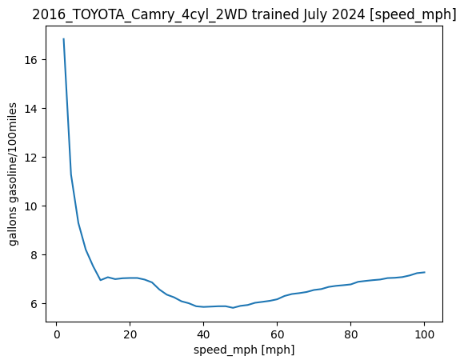
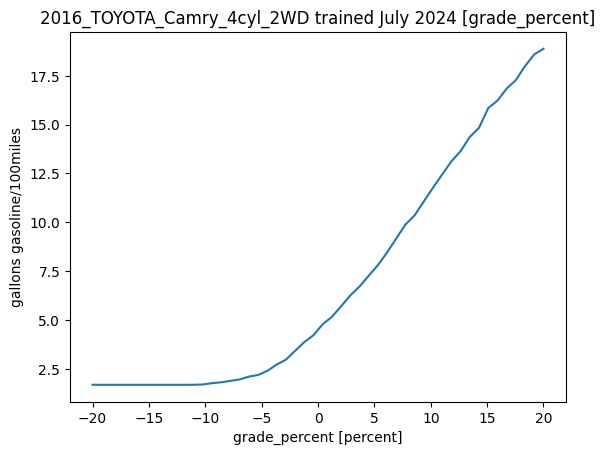
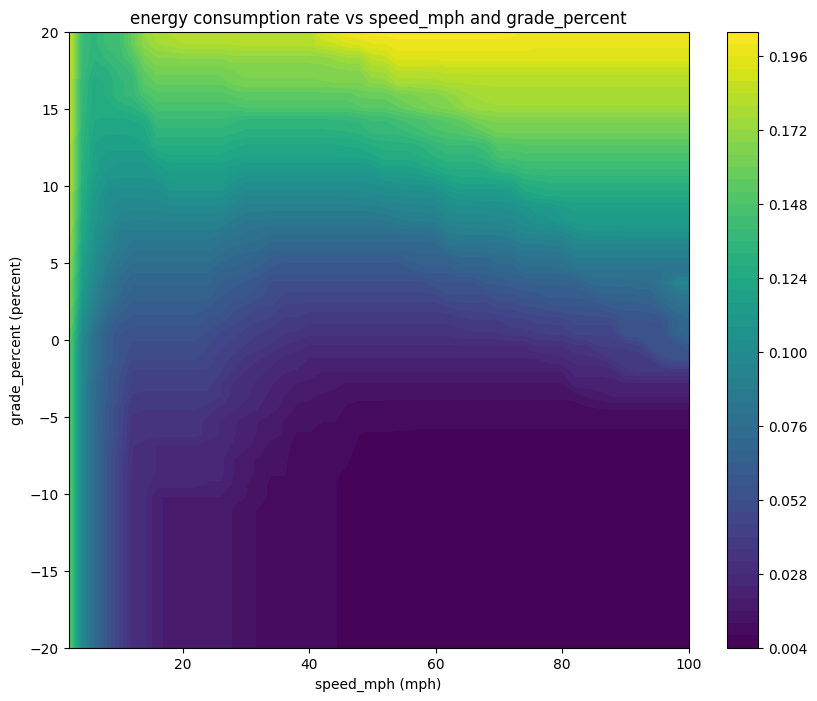

Model Prediction#
RouteE models can be loaded from a large library of pre-trained models. Conventional gasoline (CV), hybrid electric (HEV), plug-in hybrid electric (PHEV), and battery electric (BEV) powertrain types are all available.
A note on PHEVs: Plug-in hybrids have two general operating modes 1) "Charge Depleting" or "EV" mode, where the vehicle relies only on energy from the battery to power the motor and 2) "Charge Sustaining" or "Hybrid" mode, where the vehicle operates like a typical parallel hybrid, using a combination of the combustion energy and electric motor for tractive effort and regenerative braking. Since the operating mode depends on battery state-of-charge and driver decisions, pre-trained RouteE-Powertrain models for both operating modes are provided for all PHEVs and it is up to the user to decide which is most appropriate for a particular application.
Picking a registry#
By default, routee.powertrain fetches models from the public HuggingFace Hub catalog. For this example we'll use the small bundled registry that ships with the package so the notebook runs fully offline — set ROUTEE_REGISTRY_BACKEND=local before importing. Drop this line to query the full Hub catalog instead.
import os
os.environ["ROUTEE_REGISTRY_BACKEND"] = "local"
import routee.powertrain as pt
# list_available_models returns a list of ModelId objects
pt.list_available_models()
# Use query_available_models for richer metadata with optional filters
pt.query_available_models(make="toyota")
camry = pt.load_model("toyota/camry_ice/2016/rf_c3326385/v1")
After loading a model, we can inspect it to see what features (and units) the model expects. Each model contains a single estimator trained on a specific feature set. The model summary shows the features, distance column, energy target, and predicted fuel economy.
camry
| Model Summary | |
|---|---|
| Vehicle description | 2016_TOYOTA_Camry_4cyl_2WD trained July 2024 |
| Powertrain type | ICE |
| Estimator Summary | |
| Feature | speed_mph (mph) |
| Feature | grade_percent (percent) |
| Distance | distance (miles) |
| Target | gge (gallons gasoline) |
| Predicted Consumption | 30.289 (miles/gallons gasoline) |
| Real World Predicted Consumption | 25.977 (miles/gallons gasoline) |
| Predict Method | RATE |
Now, let's predict energy consumption over a sample route. RouteE Powertrain expects the inputs to be a pandas dataframe in which each row represents a road network link. There is a sample route included with the package that we'll use for demonstration.
sample_route = pt.load_sample_route()
sample_route
| speed_mph | grade_percent | distance | |
|---|---|---|---|
| 0 | 7.632068 | -0.896343 | 0.015469 |
| 1 | 6.329613 | -4.700083 | 0.003516 |
| 2 | 12.248512 | 0.000000 | 0.003402 |
| 3 | 23.752604 | -0.046280 | 0.019768 |
| 4 | 46.024926 | -0.464073 | 0.038378 |
| ... | ... | ... | ... |
| 120 | 7.415272 | -0.133898 | 0.006128 |
| 121 | 27.685268 | -3.074826 | 0.023170 |
| 122 | 51.322545 | -0.848964 | 0.028510 |
| 123 | 50.431920 | -1.053289 | 0.028015 |
| 124 | 48.325893 | -1.758078 | 0.040274 |
125 rows × 3 columns
predict always uses the feature set the model was trained on. The sample route has speed_mph, grade_percent, and distance columns which match the Camry model's expected inputs.
camry.predict(sample_route)
| gge | |
|---|---|
| 0 | 0.001028 |
| 1 | 0.000252 |
| 2 | 0.000174 |
| 3 | 0.000995 |
| 4 | 0.001056 |
| ... | ... |
| 120 | 0.000411 |
| 121 | 0.000769 |
| 122 | 0.000731 |
| 123 | 0.000719 |
| 124 | 0.000886 |
125 rows × 1 columns
If your input DataFrame only has a subset of the features a model needs, pick a model whose feature set matches what you have. The feature_names filter on query_available_models makes this easy:
# Find Toyota Camry models trained on speed alone
results = pt.query_available_models(make="toyota", model="camry", feature_names=["speed_mph"])
Model Visualization#
There are a few different functions we can visualize what a model is predicting over a range of inputs.
The first is the visualize_features function that sweeps a feature over a range and plots the results.
In order to use this we first have to define what ranges the features should be considered.
feature_ranges = {
"speed_mph": {"lower": 2, "upper": 100, "n_samples": 50},
"grade_percent": {"lower": -20.0, "upper": 20.0, "n_samples": 50},
}
results = pt.visualize_features(camry, feature_ranges)
2026-07-30 19:28:56,080 [INFO] - Failed to extract font properties from /usr/share/fonts/truetype/noto/NotoColorEmoji.ttf: Can not load face (unknown file format; error code 0x2)
2026-07-30 19:28:56,724 [INFO] - generated new fontManager


<Figure size 640x480 with 0 Axes>
We can also look at two features simultaneously with the contour_plot function.
pt.contour_plot(
camry,
x_feature="speed_mph",
y_feature="grade_percent",
feature_ranges=feature_ranges,
)
